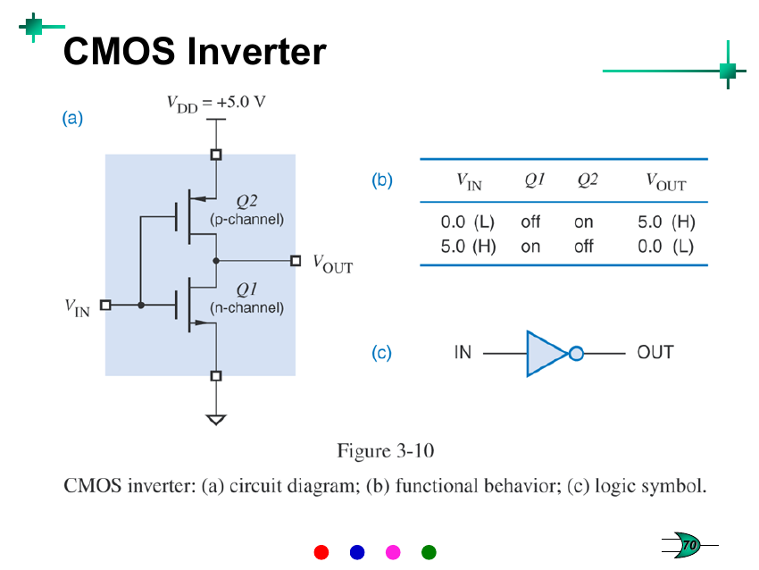
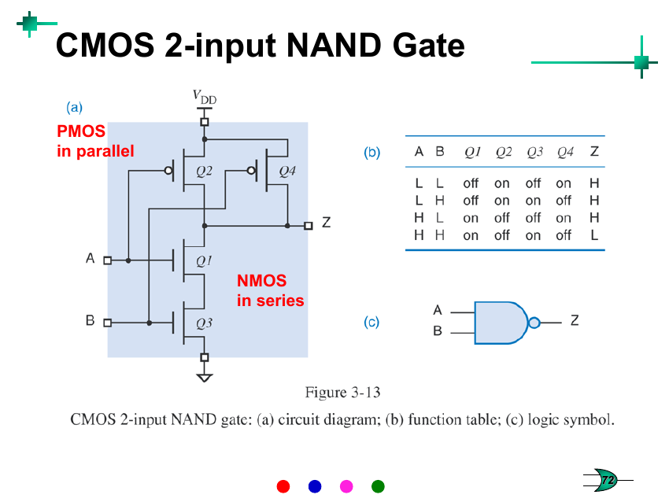
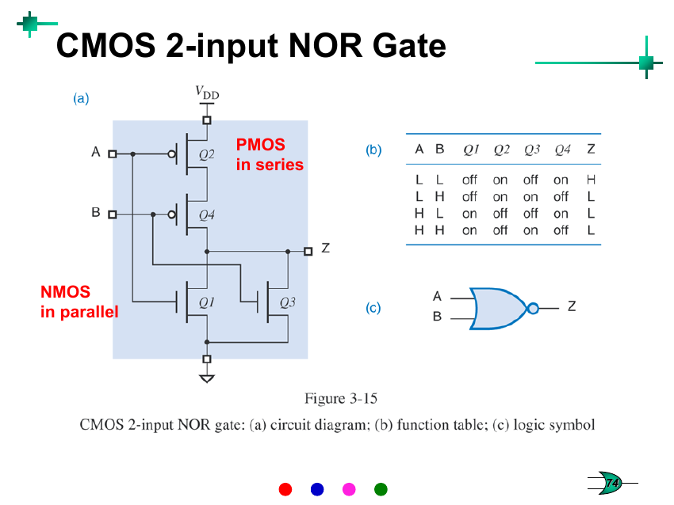
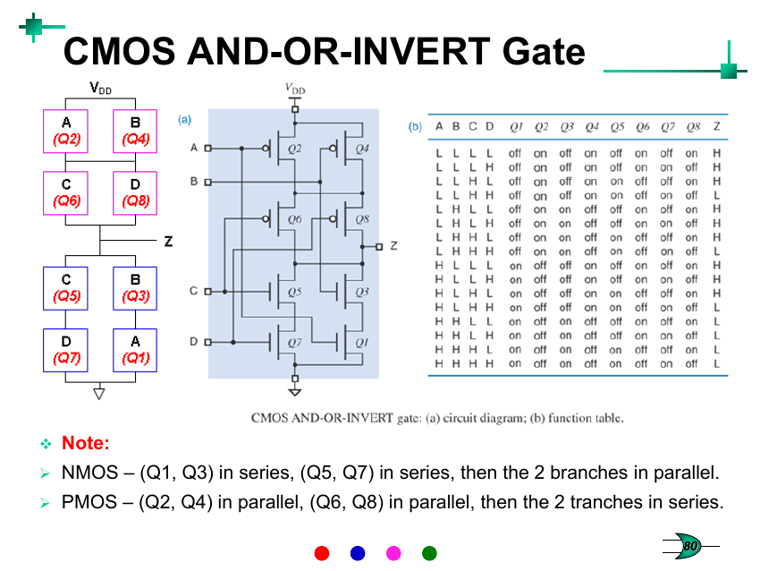
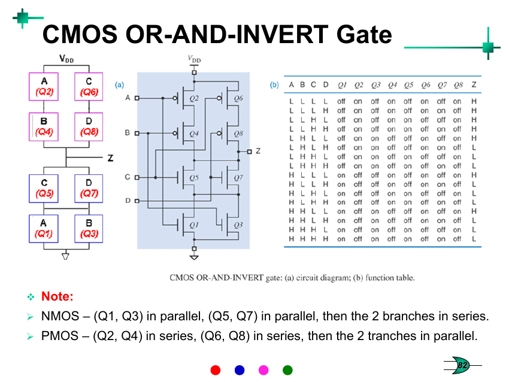
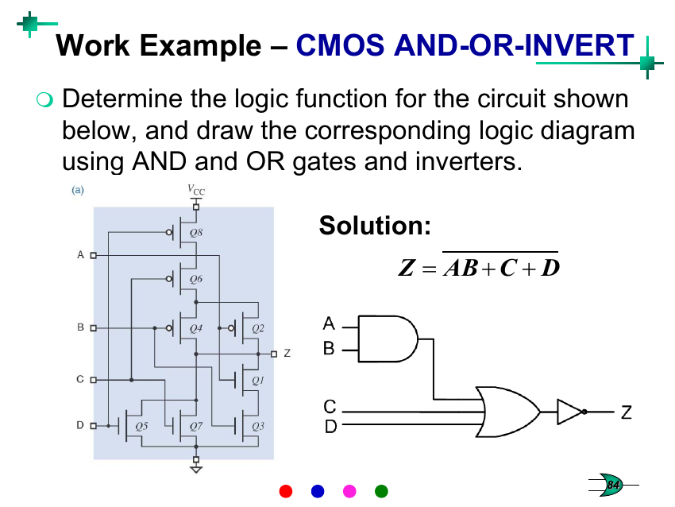
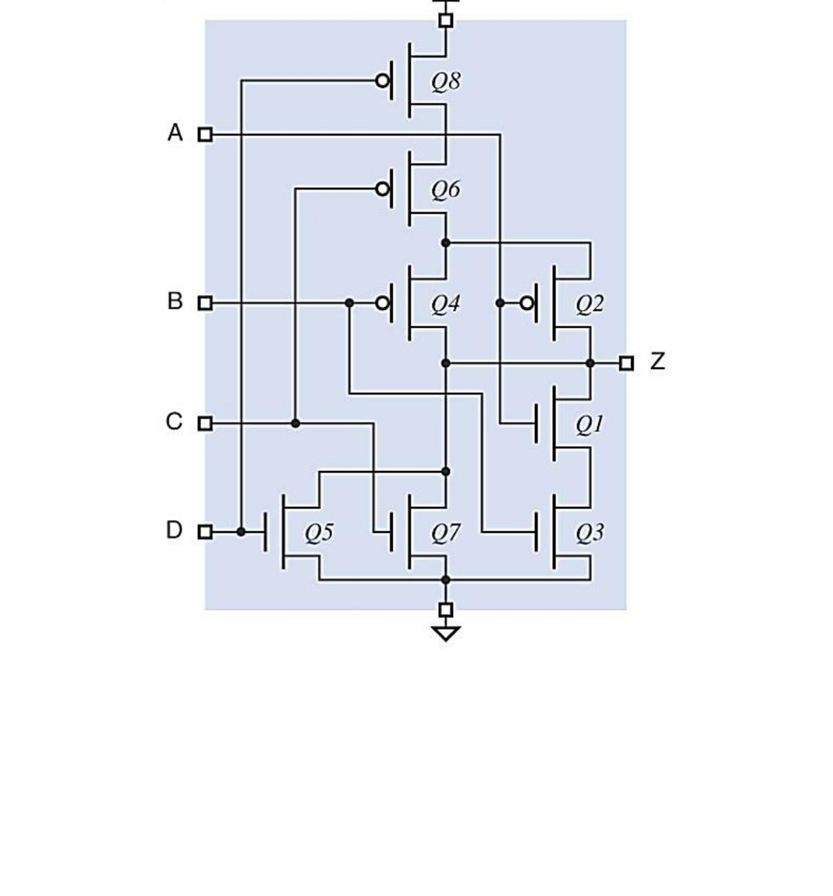
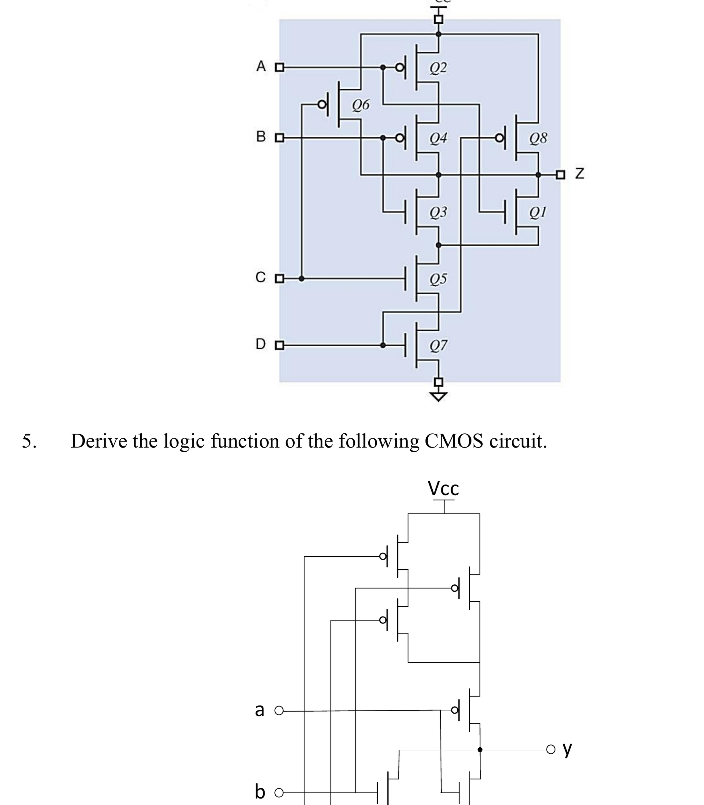
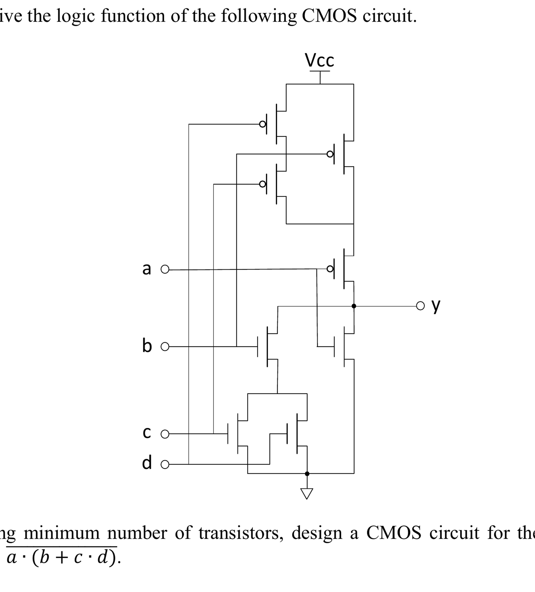

Week 2 — Digital Circuits: CMOS & Logic Gates
Lecture: "Digital Circuits" (slides 48–87) · Tutorial 2
- CMOS gate design: 8 parts, 7/7 papers, 64 of 700 marks (≈ 9 marks per paper) → see these questions with solutions.
- Almost always a 7–10 mark ‘design the minimum-transistor CMOS circuit for this function’ part in Q1. A near-certain gain once you can build pull-up/pull-down networks fast.
This page interleaves each idea with the question that tests it — learn a small piece, then use it immediately. Prefer one long read top-to-bottom instead? → Classic layout
📚 Slides, Slowly
From bits to physical circuits
Week 1 treated bits as pure abstractions (0s and 1s you do arithmetic on). This week is where they become physical: a bit is actually a voltage on a wire, and a logic gate is a tiny circuit that takes one or more voltage inputs and produces a voltage output, following a fixed rule. Any circuit whose output depends only on its current inputs (not on the past) is called a combinational circuit, and its behaviour is completely captured by a truth table — a list of every possible input combination alongside the output it produces. For n inputs there are 2n rows (you count 0 to 2n−1 in binary to generate them systematically).
The three basic operations — and their five derived cousins
Only three logic operations are fundamental: AND, OR, and NOT. Every other gate is really just a combination of these, given its own symbol and IC because it's used so often.
| NOT (X̄) | Output is the opposite of the input. 0→1, 1→0. Also called an inverter or complement. |
|---|---|
| AND (X·Y) | Output is 1 only if every input is 1. Think of it as "all conditions must hold". |
| OR (X+Y) | Output is 1 if at least one input is 1. Think of it as "any condition is enough". |
| NAND, NOR | AND / OR with the output flipped afterward (an inversion "bubble" drawn on the output). NAND is 0 only when all inputs are 1; NOR is 1 only when all inputs are 0. |
| XOR (X⊕Y) | Output is 1 when the inputs differ (exactly one is 1). It's an "odd number of 1s" detector for 2 inputs. |
| XNOR (X⊕Y‾) | Output is 1 when the inputs are the same. The exact opposite of XOR. |
Gate symbols matter for reading circuit diagrams: AND/OR/XOR/XNOR each have a distinct body shape, and a small circle ("inversion bubble") on the output turns AND→NAND, OR→NOR, XOR→XNOR. The bubble is always the "NOT" applied last, right at that terminal.
Obtain the truth table of a circuit where x = a⊕b; then c⊕d is inverted and ANDed with x to give y; then x and y feed a final XNOR gate to give z.
Try it yourself first, then reveal the answer
Don't try to write the final expression in one leap — build it exactly the way the circuit is drawn, stage by stage: first x = a⊕b, then y = x·(c⊕d)', then z = (x⊕y)'. Evaluate all 16 rows (24) systematically.
| a | b | c | d | x | y | z |
|---|---|---|---|---|---|---|
| 0 | 0 | 0 | 0 | 0 | 0 | 1 |
| 0 | 0 | 0 | 1 | 0 | 0 | 1 |
| 0 | 0 | 1 | 0 | 0 | 0 | 1 |
| 0 | 0 | 1 | 1 | 0 | 0 | 1 |
| 0 | 1 | 0 | 0 | 1 | 1 | 1 |
| 0 | 1 | 0 | 1 | 1 | 0 | 0 |
| 0 | 1 | 1 | 0 | 1 | 0 | 0 |
| 0 | 1 | 1 | 1 | 1 | 1 | 1 |
| 1 | 0 | 0 | 0 | 1 | 1 | 1 |
| 1 | 0 | 0 | 1 | 1 | 0 | 0 |
| 1 | 0 | 1 | 0 | 1 | 0 | 0 |
| 1 | 0 | 1 | 1 | 1 | 1 | 1 |
| 1 | 1 | 0 | 0 | 0 | 0 | 1 |
| 1 | 1 | 0 | 1 | 0 | 0 | 1 |
| 1 | 1 | 1 | 0 | 0 | 0 | 1 |
| 1 | 1 | 1 | 1 | 0 | 0 | 1 |
Logic families and why CMOS specifically
A logic family is a manufacturing "style" of building gates — TTL (Transistor-Transistor Logic), diode logic, and CMOS (Complementary Metal-Oxide-Semiconductor) are examples. CMOS dominates modern chips because it's fast and power-efficient, and — the point of the rest of this week — it's built from a beautifully simple, symmetric transistor pattern.
Logic levels: voltage ranges, not exact values
A real circuit's "0" isn't exactly 0V and its "1" isn't exactly 5V — each is a range. A typical 5V CMOS chip treats 0–1.5V as logic 0 and 3.5–5V as logic 1; anything in between (1.5–3.5V) is undefined and should only ever be seen briefly, during a transition.
An SSTV family defines LOW as 0.0–0.7V and HIGH as 1.7–2.5V. Classify: (a) 0.0V (b) 0.7V (c) 1.7V (d) −0.6V (e) 1.6V (f) −2.0V (g) 2.5V (h) 3.3V.
Try it yourself first, then reveal the answer
Only voltages that fall inside one of the two defined ranges get a clean logic value; anything below the LOW range, above the HIGH range, or sitting in the undefined gap between them, is invalid/undefined — a real circuit should never sit there except momentarily while switching.
Answers: (a) 0.0V → 0. (b) 0.7V → 0 (top edge of LOW range, inclusive). (c) 1.7V → 1 (bottom edge of HIGH range, inclusive). (d) −0.6V → undefined (below the LOW range — out of spec). (e) 1.6V → undefined (in the forbidden gap between ranges). (f) −2.0V → undefined (below range). (g) 2.5V → 1 (top edge of HIGH range, inclusive). (h) 3.3V → undefined (above the HIGH range — out of spec).
The MOS transistor: a voltage-controlled switch
Forget the physics of semiconductors for now — for this course, a MOS transistor is just a switch controlled by a voltage instead of by your finger. It has 3 terminals: gate (the "control"), and two more that the switch connects/disconnects. There are two flavours, and they behave oppositely:
| NMOS | Switch closes (conducts) when its gate is HIGH (1). Off when gate is LOW. |
|---|---|
| PMOS | Switch closes (conducts) when its gate is LOW (0). Off when gate is HIGH. (Notice the little bubble drawn on PMOS gates in circuit diagrams — same visual language as an inverting output bubble, and the same idea: "active when low".) |
This opposite behaviour is the entire trick behind CMOS ("Complementary" MOS): every gate pairs up NMOS and PMOS transistors so that, for any input combination, exactly one of the two networks (never both, never neither) is conducting — connecting the output to either the supply (VDD/VCC, giving a HIGH output) or to ground (giving a LOW output). That's why CMOS barely uses any power at rest: there's never a direct short-circuit path from supply to ground.
The CMOS inverter — the smallest CMOS gate

Trace it yourself: when VIN = LOW (0), the PMOS (active-low) turns ON and the NMOS turns OFF — so the output is connected straight to VDD, i.e. HIGH. When VIN = HIGH, it's the reverse: NMOS ON, PMOS OFF, output pulled to ground, i.e. LOW. Output is always the opposite of the input — an inverter, using just 2 transistors.
Building bigger gates: series = AND, parallel = OR (for NMOS)

This is the single most important wiring pattern in the whole topic, and it's worth understanding why it works, not just memorising it:
- NMOS in series = output only reaches ground if every transistor in the chain conducts, i.e. every gate is HIGH → this implements AND (pulls output LOW exactly when A AND B are both 1).
- NMOS in parallel = output reaches ground if any transistor conducts, i.e. any gate is HIGH → this implements OR.
- PMOS is always the exact mirror-image (dual) of the NMOS network: wherever NMOS has series, PMOS has parallel, and vice versa — using the same input variables. This guarantees that whenever the NMOS network is not conducting, the PMOS network is (and vice versa), so the output is always driven cleanly to one rail or the other, never floating.
- The output is always inverted in a single-stage CMOS gate — that's why the fundamental building blocks are NAND and NOR (not plain AND/OR). To get a non-inverting AND or OR, you literally bolt an inverter onto the output.
PMOS network: series → OR | parallel → AND
(PMOS is always the dual of the NMOS network — swap every series for parallel)
What it tells you: the wiring recipe that turns a Boolean function into a two-network CMOS gate. When to use it: every time you need to read a transistor circuit into a function, or build a function into transistors. Condition: always lay out PMOS as the exact series/parallel dual of NMOS, using the same variables on the same gates — that's what keeps the output from ever floating.

Fan-in: there's a limit
An n-input gate needs n series and n parallel transistors. Stacking too many transistors in series increases resistance and slows the gate down, which is why CMOS gates have a practical fan-in limit (the slides quote roughly 4 for NOR, 6 for NAND) — beyond that, designers chain smaller gates together instead of building one giant gate.
Non-inverting gates: just add an inverter
Since a single CMOS stage always inverts, a non-inverting AND or OR gate is built as NAND+inverter or NOR+inverter respectively — two stages of delay instead of one, which is the price you pay for removing the inversion.
AOI and OAI gates: two logic levels in one hop
An AND-OR-INVERT (AOI) gate computes something like Z = (A·B + C·D)' in a single stage of transistors — two levels of Boolean logic (an AND, then an OR) collapsed into one physical layer, which is faster than building it from separate AND, OR and NOT gates. An OR-AND-INVERT (OAI) gate does the mirror-image job, e.g. Z = ((A+B)·(C+D))'.


The reading/building method — memorise this sequence
- Look at the NMOS network only (bottom half, transistors connecting toward ground). Work out its conduction condition using series=AND, parallel=OR, with each transistor's own gate label as the variable.
- That conduction condition is exactly when the output is pulled LOW — so the gate's Boolean function Z equals the complement (NOT) of that condition.
- To build the PMOS network from scratch (rather than just reading it), take the NMOS structure and swap every series connection for parallel and vice versa, keeping the same variables on the same transistors. This guarantees a valid, non-floating complementary gate.
- Sanity-check: every literal (A, B, C, D…) that appears in the function should appear exactly once in the NMOS network and exactly once in the PMOS network for a minimal single-stage design.

🔗 Practice: Tutorial 2, Q3–Q7 — now that you have all 8 concepts
These five all lean on the same core skill from concepts 6 and 8 — reading or building a CMOS transistor network with series=AND/parallel=OR and the PMOS-as-dual rule. Try each one yourself before opening the reveal.
The circuit (transistors Q1–Q8, inputs A,B,C,D) is a CMOS AND-OR-INVERT gate. Find its function table and equivalent AND/OR/inverter diagram.

Try it yourself first, then reveal the answer
This is the exact circuit worked through on slide 84 (same transistor numbering, same input layout) — the tutorial's own answer hint even points you there. Read the NMOS network: Q1(A) and Q3(B) in series (the AND term), in parallel with Q5(C) alone and Q7(D) alone (two more OR'd-in terms). Pull-down conducts (Z=0) when A·B + C + D = 1.
Answer: Z = (A·B + C + D)′. As AND/OR/NOT gates: A and B into an AND gate; that output, plus C, plus D, all into a 3-input OR gate; then a final inverter.
The circuit (transistors Q1–Q8, inputs A,B,C,D) is a CMOS OR-AND-INVERT gate. Find its function table and equivalent logic diagram.

Try it yourself first, then reveal the answer
Reading the NMOS network: Q1(A) and Q3(B) are in parallel just below the output node, and that pair is in series with Q5(C), which is in series with Q7(D). Pull-down conducts (Z=0) when (A+B)·C·D = 1. Cross-checking with the PMOS side confirms it: Q2(A) and Q4(B) in series (one branch) sit in parallel with Q6(C) alone and Q8(D) alone — exactly the dual of the NMOS structure, which is the sign you've read it correctly.
Answer: Z = ((A+B)·C·D)′ = A′B′ + C′ + D′. As gates: A,B into a 2-input OR; that output, C, and D all into a 3-input AND gate; then a final inverter.
Derive the logic function y of the given CMOS circuit (inputs a,b,c,d).

Try it yourself first, then reveal the answer
Read the NMOS (pull-down) network from the bottom up: transistor-a in series with a stage that splits into transistor-b on one path and (transistor-c in series with transistor-d) on the other, the two paths in parallel. That's a·(b + c·d) as the pull-down conduction condition, so y is its complement. (Notice this is deliberately the same function that Tutorial Q6 then asks you to re-build with the minimum transistor count — Q5 shows you a working, fully-derivable circuit for it first.)
Answer: y = (a·(b + c·d))′.
Using the minimum number of transistors, design a CMOS circuit for y = (a·(b + c·d))′.
Try it yourself first, then reveal the answer
Work directly from the expression using series=AND/parallel=OR for NMOS: 'a' in series with a parallel-combination of (b) and (c series d). Then build PMOS as the exact dual (swap every series↔parallel, same variables): 'a' in parallel with a series-combination of (b) and (c parallel d).
Answer: NMOS: Na in series with [Nb ∥ (Nc series Nd)]. PMOS: Pa in parallel with [Pb series (Pc ∥ Pd)]. That's 4 NMOS + 4 PMOS = 8 transistors — minimal, since each of the 4 variables must appear at least once in each network.
Discuss how PMOS and NMOS transistors are connected in Questions 3–6, and state a general rule.
Try it yourself first, then reveal the answer
In every question, whatever two transistors are in series in the NMOS network are in parallel in the PMOS network for the same two variables, and vice-versa. General rule: the PMOS network is always the series–parallel dual of the NMOS network, built from the same input variables. Equivalently: each input drives one NMOS/PMOS pair; group these pairs to match the AND/OR structure of the function (series=AND, parallel=OR) for NMOS, and mirror it (series=OR, parallel=AND) for PMOS. The output of a single such stage is always inverted.
✍️ Write This Down
Copy these into your own notes:
- Only AND, OR, NOT are fundamental — NAND/NOR/XOR/XNOR are all built from them (or given a name because they're common).
- A combinational circuit's output depends only on the current inputs; a truth table with 2n rows fully describes it.
- NMOS conducts when gate=1 (active-HIGH); PMOS conducts when gate=0 (active-LOW, drawn with a bubble).
- NMOS network: series=AND, parallel=OR. PMOS network is always the dual (series=OR, parallel=AND) using the same variables.
- A single CMOS stage's output is always inverted — that's why NAND/NOR/AOI/OAI (not AND/OR) are the natural CMOS building blocks.
- To read any CMOS transistor circuit: analyse the NMOS (pull-down) half first using series=AND/parallel=OR, then the function is the complement of that condition.
- AOI/OAI gates do two levels of logic (e.g. AND-then-OR) in a single transistor layer — faster than chaining separate gates.
- Fan-in (number of inputs a gate can have) is limited because too many series transistors slow the gate down.
🟥 Redstone Build: Logic Gates from Scratch
This is the week redstone starts paying off directly: a redstone torch behaves almost exactly like a CMOS-style inverting element, and every gate this week can be built from torches and wire (redstone dust) alone.
Build 1 — NOT gate (the redstone torch itself)
- Place a solid block, and attach a redstone torch to its side (torch defaults to ON/lit when the block is unpowered).
- Run your input redstone dust onto the top of that block (not touching the torch directly).
- When the input is powered (1), the block becomes powered, which forces the torch OFF (0). When the input is unpowered (0), the torch stays ON (1).
- Take your output from the torch itself (or dust placed right next to it). Output = NOT(input) — exactly the CMOS inverter's truth table.
Build 2 — OR gate
The easiest gate of all: just run both input redstone lines into the same output line. If either (or both) carries a signal, the combined line is powered. No torches needed — this is a direct hardware OR, same idea as CMOS gates in parallel giving you OR.
Build 3 — NAND gate (2 torches)
- Build a NOT gate for input A (torch A').
- Build a separate NOT gate for input B (torch B').
- Merge the two torch outputs into one shared dust line (this is an OR of A' and B', built the Build-2 way).
- By De Morgan's law, A' + B' = (A·B)′ — so this merged line already is NAND(A,B), with no extra components needed.
Build 4 — AND gate (NAND + 1 more inverter)
Take the NAND output from Build 3 and run it through one more NOT gate (Build 1). Three torches total — mirrors exactly how CMOS builds a non-inverting AND from a NAND plus an inverter.
Build 5 — XOR gate
Build this the same way the lecture would derive it from simpler gates, since there's no clean single-torch trick: X⊕Y = (X+Y)·(X·Y)′. Concretely: build an OR of A,B (Build 2), build a NAND of A,B (Build 3), then feed both of those into an AND gate (Build 4). Whatever comes out is your XOR — a nice hands-on proof that XOR really is just "OR-ed, but not also AND-ed".
Build 6 — try an AOI gate
Once Builds 1–4 feel natural, attempt Z = (A·B + C)′ by combining them: an AND gate (A,B) feeding into an OR gate with C, feeding into one final inverter. Compare how many torches/repeaters your version needs versus the transistor count for the equivalent single-stage CMOS AOI gate on slide 80 — it's a good way to feel why real chips prefer building AOI as one compact transistor stage rather than as three separate gates.